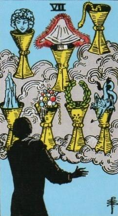
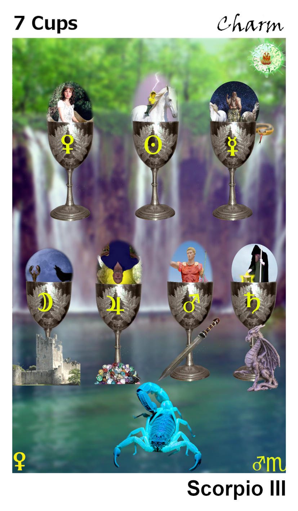
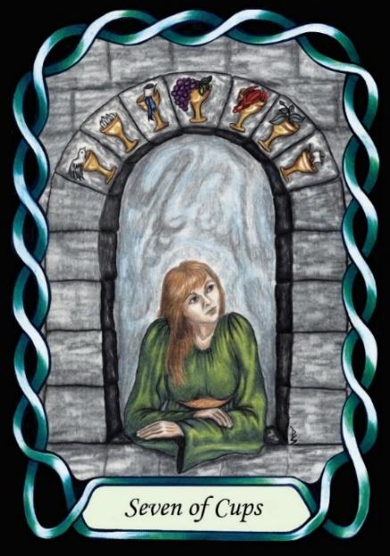

Seven of Cups



Sign |
|
Eight –dark side |
|
Sign Ruler |
|
Element |
Water: emotions |
Modality |
|
Symbol |
Scorpion |
Decan |
|
Decan Ruler |
|
Time |
Nov 13 - 22 |
Charm Scorpio III
A Master of the dark side recognises the seven personality weaknesses imbued by the Governors, and so is easily able to manipulate people, not in a mind control sense, but in a subtle way that charms people into voluntarily following the desired path.
Goldschneider Personology
These individuals can utilise the charm of Venus in a variety of situations, including home and business, and can have a persuasive or even seductive influence on people around them, and are particularly good at selling a dream. They tend to be self-sufficient, but not team players.
RWS Imagery
A Scorpio-three has a varied toolkit of Cups with which to charm others, and perhaps themselves. The toolkit holds the seven mortal sins, according to the governors
(left to right, top to bottom):
Lust |
Woman’s head |
|
Pride |
A coronal aurora, as in pride of Leo |
|
Scheming |
A snake, symbol of deception |
|
Instability |
A stable castle |
|
Greed |
Excessive wealth |
|
Violence |
Wreath of victory in battle, |
|
Callousness |
A heartless Saturn’s dragon |
Pymander Imagery
Each of the seven Cups is linked to one of the seven Governors, and hence to one of the seven mortal sins. Each and displays a corresponding Major card for the Governor. The Cups are arranged as per the RWS, and five of them have imagery that mimics that in the RWS
Summary
This card represents mastery of subtle influence, charm, and emotional manipulation. Through an understanding of the negative aspects of the Pymander’s seven Governors.